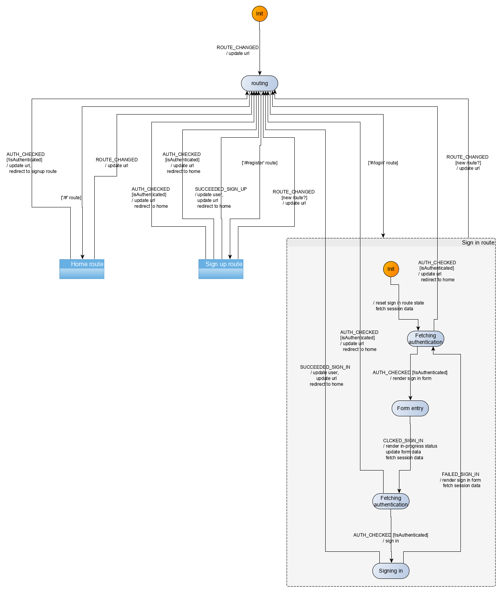

Tutorials
Introduction
- Why Kingly
- Get started
Counter
- Implementation
Password meter
- Modelization
- Machine implementation
- Interface implementation
- Implementation with the yEd graph editor
- Compiling the machine
- What we learned
Chess game
- Two-player chess game
- Chess game - adding features
- Chess game - more features
RealWorld clone
- RealWorld app
- Home route
- Sign-up route
- Sign-in route
- Editor route
- Settings route
- User profile route
- Article route
- Refactoring
- Lessons learned
Sign-in route
In this section, we will modelize and implement the user flows related to the sign in route. In the sign-in route, the user logs in with his email and password. The following rules apply:
- authenticated users navigating to the sign-in page should be redirected to the home route
- authenticated users cannot sign in while being logged in. Any attempt to do so will trigger a redirection to the home route
The second rule is one that we added ourselves. The demo app actually lets you log in with two competing identities. I believe it is probably a bug. The reproducing sequence is as follows:
- open the login page in two separate tabs
- log in with user 1 in the first tab
- log in with user 2 in the second tab
You should see in each tab the user feeds corresponding to each user. Further navigation however will use the latest logged in user as the current user, which is at best confusing, and in the worse case unsafe. In the context of this demo application, the impact is not huge, but we nonetheless insist here on taking a safer approach.
UI
The screens for the sign-in route are similar to those of the sign-up screen with the difference that there is no username field in the sign-in page.
Implementation for the src/UI/SignIn.svelte component is similar to that of the SignUp component.
The full source code for the SignIn component can be accessed in the repository.
UI testing
As before, we test the UI with Storybook. The corresponding stories are available in the source repository.
Events
We have the following events for the sign-in route:
| Event | Event data | Occurs when |
|---|---|---|
CLICKED_SIGNIN |
form data ({email, password}) |
user submits the sign-in form |
FAILED_SIGN_IN |
errors (as returned from the sign-in API) | user submitted the sign-in form but the request failed |
SUCCEEDED_SIGN_IN |
signed in user (as returned from the sign-in API) | user submitted the sign-in form and the request succeeded |
Additionally, the user may click on links (like have an account). However, this is not handled directly by the machine. Instead, this is handled by the browser as any other links, triggering a change of URL, which then triggers a ROUTE_CHANGED event to the machine.
Commands
We have the following commands for the sign-in route:
| Command | Command parameters | Description |
|---|---|---|
REDIRECT |
hash to redirect to | redirects the user to a new/same hash location |
SIGN_IN |
sign-in form data ({email, password}) |
sends an API request to sign the user in |
Commands implementation
We already have implemented the REDIRECT command, so we will reuse that.
To implement the sign-in command, we again defer to the API and update the session repository with the new user data. The logic, as before, is enclosed into functions passed as effect handlers (saveUser, and login):
[SIGN_IN]: (dispatch, params, effectHandlers) => {
const { email, password } = params;
const { login, saveUser } = effectHandlers;
login({ email, password })
.then(res => {
const { user } = res;
saveUser(user);
dispatch({ [SUCCEEDED_SIGN_IN]: user });
})
.catch(({ errors }) => {
dispatch({ [FAILED_SIGN_IN]: errors });
});
}User scenarios test
We test four key user scenarios, the content of which should be clear from their identifiers in the code:
const userStories = [
[
UNAUTH_USER_ON_SIGNIN_SEES_FORM,
UNAUTH_USER_ON_SIGNIN_SEES_FORM_INPUTS,
UNAUTH_USER_ON_SIGNIN_SEES_FORM_COMMANDS
],
[
AUTH_USER_ON_SIGNIN_IS_REDIRECTED,
AUTH_USER_ON_SIGNIN_IS_REDIRECTED_INPUTS,
AUTH_USER_ON_SIGNIN_IS_REDIRECTED_COMMANDS
],
[
UNAUTH_USER_ON_SIGNIN_SEES_FORM_SIGNS_IN_AND_SEES_HOME_FEED,
UNAUTH_USER_ON_SIGNIN_SEES_FORM_SIGNS_IN_AND_SEES_HOME_FEED_INPUTS,
UNAUTH_USER_ON_SIGNIN_SEES_FORM_SIGNS_IN_AND_SEES_HOME_FEED_COMMANDS
],
[
UNAUTH_USER_ON_SIGNIN_SEES_FORM_FAILS_SIGN_IN_AND_SEES_FORM_WITH_ERRORS,
UNAUTH_USER_ON_SIGNIN_SEES_FORM_FAILS_SIGN_IN_AND_SEES_FORM_WITH_ERRORS_INPUTS,
UNAUTH_USER_ON_SIGNIN_SEES_FORM_FAILS_SIGN_IN_AND_SEES_FORM_WITH_ERRORS_COMMANDS
]
];Behaviour modelization
The behaviour to modelize is very similar to that of the sign up route with the difference that there is no username field in the sign-in route. With that exception, the logic is the same and we reach the following modelization:

Note that we do not need to guard against a user clicking the sign-in button twice, as, after the first click, the machine will be in another state which does not accept the second click! It is a good practice to also ensure that at the UI level by disabling the button when it is first clicked, but the state machine design already naturally covers that case.
Note also how we check twice that our user is authenticated before either displaying the sign-up form or executing the sign-up API request. Note also, how the nested structure of our state machine allows us to focus on the part that we are interested in visualizing, while folding the part we are not interested in.
More importantly, this Sign-in route sub-machine has the same structure as the Sign-up route sub-machine! That makes it a target candidate for refactoring. When it comes to DRY refactoring, we follow the rule of three, i.e. we will wait for the third occurrence of a sub-machine with an identical structure before committing to defining a reusable abstraction.
Behaviour implementation
The implementation (src/behaviour/signIn.js) derives directly from the modelization.
Summary
We implemented the sign-in route for our application, following the implementation strategy we previously detailed. The sign-in route behaviour was very similar to the sign-up route behaviour, and we have identified but delayed an opportunity to isolate the common behaviour in a refactoring.